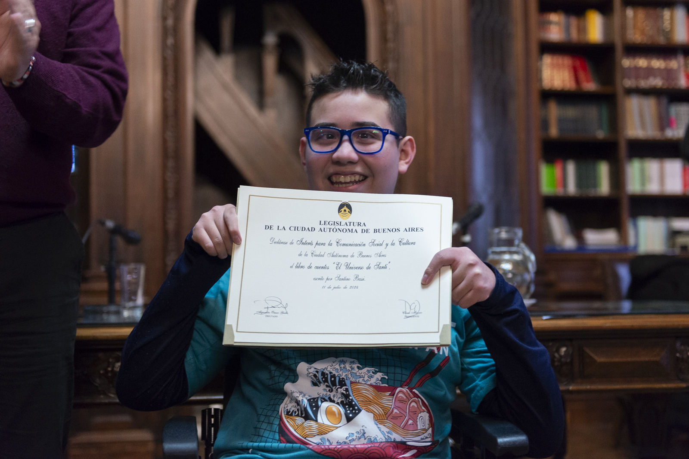

El evento se llevó a cabo en la biblioteca de la Legislatura de la Ciudad Autonoma de Buenos Aires, donde a Santino Bassi le reconocieron su libro, "El universo de Santi" de interés para la comunicación social y la cultura, el operante de todo esto fue el diputado Alejandro Grillo. Santi estuvo acompañado por su familia, su banda de amigos y profesores. También Dany, quien tiene un programa de radio llamado “Transnochados” donde ya le han hecho varias entrevistas a Santi Su hermano Maximo Bassi procedió a leer uno de sus cuentos llamado “El rey rezagado”, después de esto Santino nos dirigió algunas palabras emotivas e hizo un juramento. Por último Santi nos dio souvenirs (un hermoso llavero) e hicimos taza taza cada uno a su casa...
